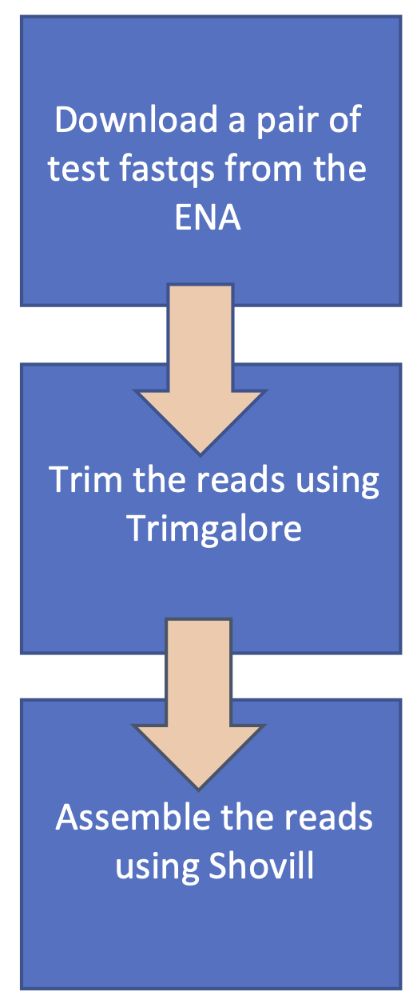
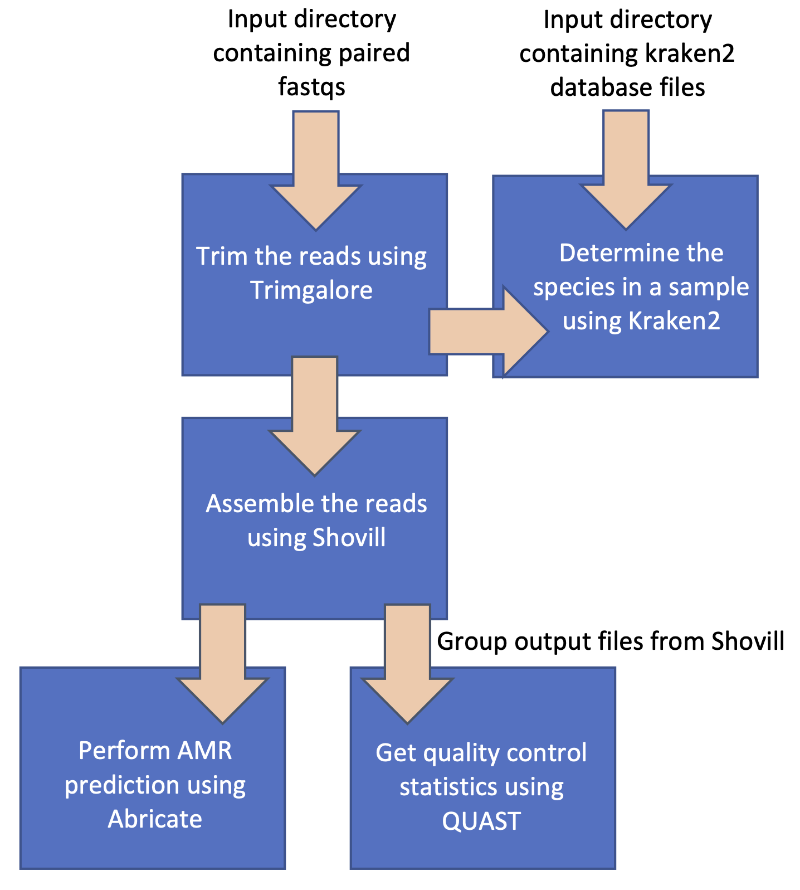

Creating Custom Nextflow Workflows#
Warning
This is the archived documentation, for up to date information see our new Documentation.
Suggested reading before starting this tutorial:
Workflow management systems such as Nextflow can be used to create reproducible and scalable workflows. This tutorial consists of taking a test pipeline with the following workflow:

And modifying and extending it to follow this workflow:

TASK 1: Try running the test pipeline#
Background reading: nextflow docs: basic concepts.
This tutorial uses the MRC-CLIMB/modules GitHub repository. The module files in this repo contain the processes which we’ll use to build the workflow.
Create a notebook server and start a terminal session. Next, clone the MRC-CLIMB/modules repo and take a look at the module files in the directory modules/modules using cat. E.g. cat shovill.nf
jovyan:~$ git clone https://github.com/MRC-CLIMB/modules.git
[...]
jovyan:~$ cd modules/modules/
jovyan:~/modules/modules$ ls
abricate.nf centrifuge.nf fastp.nf kraken2.nf mykrobe.nf prokka.nf quast.nf shovill.nf trimgalore.nf trimmomatic.nf
jovyan:~/modules/modules$ cat shovill.nf
process shovill {
/**
* Assemble bacterial isolate genomes (https://github.com/tseemann/shovill)
* @input tuple dataset_id, path(forward), path(reverse)
* @output shovill_out tuple val(dataset_id), path("${dataset_id}.fasta")
*/
tag { dataset_id }
cpus 2
memory '8GB'
container = "quay.io/climb-big-data/shovill:1.1.0"
publishDir "${params.outputDir}/${task.process.replaceAll(":", "_")}", mode: 'copy', pattern: '*.fasta'
input:
tuple val(dataset_id), path(forward), path(reverse)
output:
tuple val(dataset_id), path("${dataset_id}.fasta"), emit: shovill_out
path("${dataset_id}.fasta"), emit: shovill_quast
script:
"""
shovill --cpus ${task.cpus} --R1 ${forward} --R2 ${reverse} --minlen 500 --outdir shovill
mv shovill/contigs.fa ${dataset_id}.fasta
"""
You will see the processes contain the following definitions:
-
Tag: Custom label for a process (makes it easier to identify a task in the Nextflow logs)
-
Cpus: Number of cpus to allocate to a process
-
Memory: Memory allocated to a process
-
Container: Container used to run the process. Pulled from the climb-big-data quay.io repository
-
PublishDir: Declare output files to be published
And the following declarations:
-
Input: The expected cardinality for the input channel(s)
-
Output: The expected output files from a process, output channels are named using emit
-
Script: The command/script to run
Note that to run a Nextflow pipeline using Kubernetes (k8s): cpu, memory and container must be defined for every process.
Nextflow uses input and output channels to pass data and files between processes. These channels define the execution flow of the pipeline. The script string is executed as a Bash script.
Navigate to the directory containing the test pipeline modules/test-pipeline. You’ll see two files: the pipeline itself main.nf and a config file nextflow.config.
Take a look at the contents of these files using cat. In main.nf, you’ll see a short workflow is defined as in the first figure above, which uses processes from the module files found in modules/modules and modules/test-datasets, imported using include. Channels are used to pass the input and output data between the processes.
jovyan:~/modules/modules$ cd ../test-pipeline/
jovyan:~/modules/test-pipeline$ ls
main.nf nextflow.config
jovyan:~/modules/test-pipeline$ cat main.nf
#!/usr/bin/env nextflow
// enable dsl2
nextflow.enable.dsl = 2
// import modules
include {tbfastqs} from '../test-datasets/tbfastqs.nf'
include {trimgalore} from '../modules/trimgalore.nf'
include {shovill} from '../modules/shovill.nf'
// define workflow
workflow {
// main workflow
main:
tbfastqs()
trimgalore(tbfastqs.out.tbfastqs_out)
shovill(trimgalore.out.trimgalore_out)
}
In nextflow.config, you’ll see a parameter for the output results directory outputDir needs to be defined.
jovyan:~/modules/test-pipeline$ cat nextflow.config
params {
outputDir = ""
}
Open the nextflow.config in a text editor e.g. nano nextflow.config and add a value for outputDir e.g. /shared/team/modules-out. Your output directory should be within /shared/team as your home directory only has 20GB of storage (Understanding Storage).
Now, try running the pipeline:
jovyan:~/modules/test-pipeline$ nextflow run main.nf
N E X T F L O W ~ version 23.04.1
Launching `main.nf` [exotic_davinci] DSL2 - revision: ad3ec637d6
executor > local (1), k8s (2)
[56/e6bb7a] process > tbfastqs [100%] 1 of 1 ✔
[4e/f93925] process > trimgalore (SRR9588019) [100%] 1 of 1 ✔
[a5/0b0c04] process > shovill (SRR9588019) [100%] 1 of 1 ✔
Completed at: 31-Jul-2023 15:24:21
Duration : 10m 27s
CPU hours : 0.3
Succeeded : 3
Notice that one process ran locally, and two processes with the k8s executor > local (1), k8s (2). If you take a look at the process tbfastqs within modules/test-datasets/tbfastqs.nf, you'll see the directive executor 'local' has been defined, telling Nextflow to run this process locally. By default, processes will run on the k8s unless otherwise specified (due to the defaults set in the CLIMB Nextflow config, you can see what the config looks like using the command nextflow config).
Open a new terminal window, if you run ls /shared/team/nxf_work/$JUPYTERHUB_USER, you’ll see a work directory has been created (this is the directory Nextflow uses when running the processes). An output directory with the results from the pipeline will also be created at the path you set in the nextflow.config (the publishDir declaration in a process identifies which output files from a process should be copied from the work directory to the output directory).
TASK 2: Remove tbfastqs process and create a channel for fastqs#
Background reading: nextflow docs: fromFilePairs channel factory
The test-pipeline pulls a pair of fastqs from the ENA for testing purposes. In the real world, we would want to pass a directory containing fastq files to the workflow.
Step 1: Remove tbfastqs process from main.nf#
Open the modules/test-pipeline/main.nf file in a text editor, e.g. nano main.nf. Remove the include statement for tbfastqs and remove the tbfastqs process from the workflow itself.
Step 2: Add a parameter to the nextflow.config for the input fastq directory#
First, let's download a pair of fastqs from the ENA to a directory within /shared/team/, e.g. /shared/team/test-fastqs. We are using /shared/team/ as it is mounted to the Kubernetes pods.
jovyan:~$ cd /shared/team/
jovyan:/shared/team$ ls
conda nxf_work results Sting_ec string
jovyan:/shared/team$ mkdir test-fastqs
jovyan:/shared/team$ cd test-fastqs
jovyan:/shared/team/test-fastqs$ wget ftp://ftp.sra.ebi.ac.uk/vol1/fastq/SRR958/009/SRR9588019/SRR9588019_1.fastq.gz
[...]
jovyan:/shared/team/test-fastqs$ wget ftp://ftp.sra.ebi.ac.uk/vol1/fastq/SRR958/009/SRR9588019/SRR9588019_2.fastq.gz
[...]
jovyan:/shared/team/test-fastqs$ ls
SRR9588019_1.fastq.gz SRR9588019_2.fastq.gz
We want to add this directory with the fastqs as a parameter to the nextflow.config in the params{} declaration. The parameter will take the general form:
PARAM_NAME=/PATH/GLOB_FOR_FASTQS
-
PARAM_NAME: Set a name for the parameter.
-
PATH: Path to the fastqs.
-
GLOB_FOR_FASTQS: We need to set a glob pattern for Nextflow to identify the fastqs pairs. Hint: Take a look at the example in https://www.nextflow.io/docs/latest/channel.html#fromfilepairs
Step 3: Add a Channel for the input fastqs#
In main.nf, add a channel for the input fastqs. In Nextflow, data is passed to processes using channels. An input channel for paired fastqs takes the following general form:
Channel.fromFilePairs(INPUT_PATH, OPTIONS)
.set{ CHANNEL_NAME }
-
CHANNEL_NAME: Set a name for the channel.
-
INPUT_PATH: This should be the parameter you set in the config in Step 2. To call a parameter in the main script we use
"${params.PARAM_NAME}", substituting in the parameter name you set in Step 2. -
OPTIONS: Add in any options. For this workflow, we want to add in the option
flat: true, to match the cardinality set in the input declaration for the trimgalore moduletuple val(dataset_id), path(forward), path(reverse)
Step 4: Change the input channel for trimgalore#
The input channel for the trimgalore process is set to the output of the tbfastq process, e.g. trimgalore(tbfastqs.out.tbfastqs_out). This now needs to be changed to the CHANNEL_NAME you set in Step 3.
Now, try running the pipeline again, but this time run the pipeline in the background using the -bg option and redirect the STDOUT to a file:
jovyan:~/modules/test-pipeline$ nextflow run main.nf -bg > task2.txt
cat task2.txt
TASK 3: Add abricate and quast processes#
Background reading: nextflow docs: collect operator
Take a look at the structure of the current workflow, and try to add the processes from modules/abricate.nf and modules/quast.nf to the workflow.
Step 1: Add abricate process to the workflow (remember to add include statement!)#
A process declaration takes the general form:
PROCESS_NAME(INPUT_CHANNEL_1, INPUT_CHANNEL_2, …, INPUT_CHANNEL_N)
-
PROCESS_NAME: Name of the process as named in the module file.
-
INPUT_CHANNEL_{1:N}: Input channels to the process separated by commas.
E.g. shovill(trimgalore.out.trimgalore_out) uses the output channel trimgalore_out from trimgalore (as defined in the process in modules/trimgalore.nf) for its input channel. For abricate, we have the one input channel which is the output channel from shovill shovill_out
Step 2: Add quast process to workflow#
Next, try to add the process from modules/quast.nf to the workflow. Quast takes the output channel shovill_quast from shovill as its input channel. However, this time we also need to use an operator on the channel. In the process declaration, operators are used like so:
PROCESS_NAME(INPUT_CHANNEL.OPERATOR)
modules/quast.nf
script:
"""
quast.py -t ${task.cpus} -o . --contig-thresholds 0 --no-html --no-plots *.fasta
"""
you’ll see from the *.fasta wildcard that quast can run on multiple fastas at once. As such, we want to gather the output fastas from all our run shovill processes (note in this example, the shovill process will run only once as we have one pair of fastq to assemble, but if we had multiple pairs of fastqs the shovill process would run multiple times). To do this we will use the operator .collect().
Try running the pipeline again, to see if you’ve correctly added abricate and quast to the workflow.
TASK 4: Create channel for Kraken 2 database and add Kraken 2 process#
Background reading:
Kraken 2 requires as input a reference database in order to assign species IDs to a sample. We will need to create an input channel for this database.
Step 1: Add a parameter for the path to the Kraken 2 database#
Add a new parameter to the nextflow.config for the Kraken 2 database path
Kraken 2 databases can be found at /shared/public/db/kraken2. We will use the k2_pluspfp_16gb database. The Kraken 2 database files have the extension .k2d. Use this information to construct a parameter for the Kraken 2 database path.
Note that /shared/public is also mounted to the Kubenetes pods.
Step 2: Create a channel for the database#
In main.nf create a channel for the Kraken 2 database files. This time use the Channel.fromPath directive, using the parameter you set in Step 1 as the path.
Step 3: Add the Kraken 2 process to the workflow#
Add the Kraken 2 process defined in modules/kraken2.nf to the main workflow. Kraken 2 will take 2 input channels: the output from trimgalore trimgalore_out, and the Kraken 2 database channel from Step 2. Use the operator .toList() for the Kraken 2 database channel (this will emit the Kraken 2 database files as a single item).
Once you've completed the above steps, try running the workflow again. Your workflow should now resemble the second figure at the top of this page.
Solution#
Once you have completed all the tasks, your workflow and config should look something like the following:
main.nf#
#!/usr/bin/env nextflow
// enable dsl2
nextflow.enable.dsl = 2
// import modules
include {trimgalore} from '../modules/trimgalore.nf'
include {shovill} from '../modules/shovill.nf'
include {abricate} from '../modules/abricate.nf'
include {quast} from '../modules/quast.nf'
include {kraken2} from '../modules/kraken2.nf'
// define channels
Channel.fromFilePairs("${params.reads}", flat: true)
.set{ inputFastq }
Channel.fromPath( "${params.kraken_db}" )
.set{ kraken2DB }
// define workflow
workflow {
// main workflow
main:
trimgalore(inputFastq)
shovill(trimgalore.out.trimgalore_out)
abricate(shovill.out.shovill_out)
quast(shovill.out.shovill_quast.collect())
kraken2(trimgalore.out.trimgalore_out, kraken2DB.toList())
}
nextflow.config#
params {
outputDir = "/shared/team/modules-out"
reads = "/shared/team/test-fastqs/*_{1,2}.fastq.gz"
kraken_db = "/shared/public/db/kraken2/k2_pluspfp_16gb/*.k2d"
}